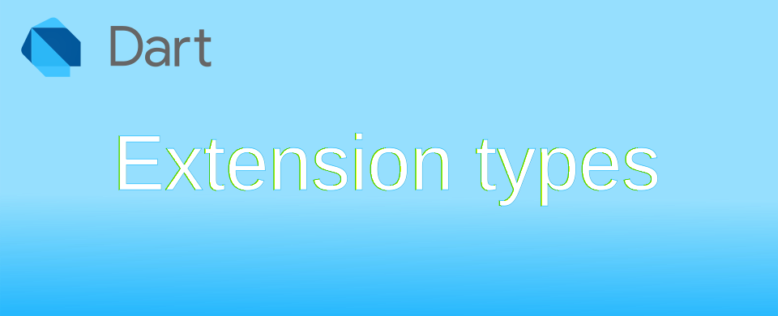

Dart: Extension types คืออะไร

Extension type เป็นการสร้าง interface ขึ้นมาสำหรับ type ที่มีอยู่แล้วในตอนที่ compile แอป ช่วยให้คุณสามารถเปลี่ยนวิธีใช้ type ได้โดยไม่ต้องเปลี่ยน type เดิมที่มีอยู่ เมื่อใช้ type ที่ทำการ extension หากเรียกใช้งานไม่ถูกต้อง ตัว compiler จะแจ้งความผิดพลาด ก่อนถูกนำไปใช้งานจริง
มันเปรียบเหมือนการทำ wrapper classes มีผลให้ไม่ต้องสร้าง Object ใหม่เพิ่มเติม ส่วนที่ประกาศการใช้งานจะเป็นแบบ static ไม่สามารถเปลี่ยนแปลงได้ระหว่างที่แอปกำลังทำงาน ดังนั้นมันจึงไม่มี overhead ในการสร้างและใช้งาน extension type
ข้อดีอีกอย่างของ extension type คือ สามารถเลือกเก็บคุณสมบัติของ type เดิมได้ จะตัดบางอันออก เปลี่ยนกระบวนการทำงานของคำสั่งเดิมใหม่ และเพิ่มคุณสมบัติใหม่เข้าไปได้ด้วย
ตัวอย่าง ลองสร้างคำสั่ง .toString8() ให้ทำงานดังนี้ IntEx(1234).toString8() → '00001234'
extension type IntEx(int i) {
String toString8() {
String iText = i.toString();
return iText.padLeft(8, '0');
}
}
void main() {
var ex = IntEx(1234);
print(ex.toString8()); // output → 00001234
print(ex); // output → 1234
print(ex.runtimeType); // output → int
// access i to use normal int
print(ex.i.toDouble()); // output → 1234.0
print(IntEx(-1234).toString8()); // output → 000-1234
}
จากตัวอย่าง IntEx คือชื่อของ type ใหม่ ส่วน int i คือการบอกว่าจะ extension int โดย parameter i ในการเก็บค่าเพื่อใช้อ้างอิงในตัวคำสั่ง extension type รวมถึงการสร้าง constructors
ข้อสังเกต ตัวคำสั่ง .toString8() จะใช้ได้เฉพาะตัวแปรที่ระบุว่าเป็น IntEx เท่านั้น ตัวแปรที่เป็น int ปกติจะไม่สามารถเรียกคำสั่งดังกล่าวได้ ดังนั้นมันจะไม่เหมือนคำสั่ง extension on ที่จะไปเพิ่มคำสั่งใน type ที่ระบุโดยตรง
Extension type syntax พื้นฐาน
สร้าง type ใหม่ชื่อ XXXX บนประเภทข้อมูล TTTT เดิม สามารถเข้าถึงข้อมูล TTTT เดิมผ่าน YYYY
extension type XXXX (TTTT YYYY) {
// declare members and methods here
}
ตัวอย่าง ลองสร้าง type ใหม่ชื่อ IdNumber เพื่อเก็บตัวเลข type int ผ่าน parameter ชื่อ id
extension type IdNumber(int id) {}
void main() {
IdNumber myId = IdNumber(12345678), otherId;
int x;
print(myId.toString()); // OK, .toString() from Object.toString()
otherId = myId; // OK, same type
x = myId.id; // OK, [id] is int
// user add value to ID, it doesn't make sense.
otherId = myId + 10; // error → The operator '+' isn't defined for the type 'IdNumber'.
// ID isn't a normal int, not allow to use it.
x = myId; // error → A value of type 'IdNumber' can't be assigned to a variable of type 'int'.
}
ในกรณีที่ผู้ใช้ไม่ประกาศอะไรใน {} เลย ตัว Dart จะทำการสร้างประกาศสิ่งต่อไปนี้ให้อัตโนมัติ
- default constructor →
IdNumber(int id) : this.id = id; - อ่านค่า
idจาก(int id)→int get id;
การกำหนด Generics type
ใน type จำพวก class ต่าง ๆ จะรองรับการประกาศ type ด้วย Generics ผู้ใช้สามารถกำหนดประเภทของ Generics ที่ต้องการได้ดังนี้
extension type IntList(List<int> x) {}
void main() {
var list1 = IntList([1, 2, 3, 4]); // OK
var list2 = IntList([1.0]); // error → The element type 'double' can't be assigned to the list type 'int'
}
ตัวอย่าง รองรับ Generic <T>
extension type TList<T>(List<T> x) {}
void main() {
TList<int> list1 = TList<int>([1, 2, 3, 4]); // OK
TList<double> list2 = TList([1.0]); // OK
TList<double> list3 = TList([1]); // automatic cast from List<int> to List<double>
print(list3); // output → [1.0]
}
การใช้ extends เพื่อให้รองรับ sub class ที่ต้องการ ในตัวอย่างจะรับเฉพาะ <num> <int> <double> เท่านั้น
extension type TList<T extends num>(List<T> x) {}
void main() {
TList listNum = TList([1, 2.0]); // OK
TList<int> listInt = TList<int>([1, 2, 3, 4]); // OK
TList<double> listDouble = TList<double>([1.0, 2.0]); // OK
TList listX = TList(['x']); // error → The element type 'String' can't be assigned to the list type 'num'
}
การสร้าง Constructors
การสร้าง Constructors ใน extension type จะคล้ายกับที่ประกาศใน class ตัวอย่างการสร้าง double เพื่อเก็บค่าอุณหภูมิในหน่วย C รองรับการใส่ด้วยหน่วย Fahrenheit และ Kelvin ด้วย constructor TempC.f(double degreeF) และ TempC.k(double degreeK) ตามลำดับ
// create TempC type to store Temperature in Celisius unit
extension type TempC(double degreeC) {
// convert from Fahrenheit to Celsius
TempC.f(double degreeF) : degreeC = (degreeF - 32) / 1.8;
// convert from Kelvin to Celsius
TempC.k(double degreeK) : degreeC = degreeK - 273.15;
}
void main() {
var t1 = TempC(100);
print(t1); // outout → 100.0
var t2 = TempC.f(32);
print(t2); // outout → 0.0
var t3 = TempC.k(273.15);
print(t3); // outout → 0.0
}
unnamed constructor
ผู้ใช้สามารถกำหนด unnamed constructor ได้เหมือนกับการสร้าง class ดังนี้
// create TempC to store Temperature of Celisius
extension type TempC._(double degreeC) {
// unnamed constructor
TempC() : degreeC = 0;
// convert from Fahrenheit to Celsius
TempC.f(double degreeF) : degreeC = (degreeF - 32) / 1.8;
// convert from Kelvin to Celsius
TempC.k(double degreeK) : degreeC = degreeK - 273.15;
}
void main() {
var t0 = TempC();
print(t0); // outout → 0.0
var t1 = TempC._(100);
print(t1); // outout → 100.0
}
_ constructor
ในตัวอย่าง TempC._ เป็นการกำหนดชื่อ constructor เป็น _ การตั้งชื่อแบบนี้เพื่อหลบให้ผู้ใช้งานสามารถสร้าง unnamed constructor ได้ ผู้ใช้สามารถตั้งชื่อให้ตรงกับที่ต้องการได้หากต้องการใช้งาน เช่น เปลี่ยนให้เป็น c ให้สอดคล้องกับ constructor ตัวอื่น ๆ
// create TempC to store Temperature of Celisius
extension type TempC.c(double degreeC) {
// unnamed constructor
TempC() : degreeC = 0;
// convert from Fahrenheit to Celsius
TempC.f(double degreeF) : degreeC = (degreeF - 32) / 1.8;
// convert from Kelvin to Celsius
TempC.k(double degreeK) : degreeC = degreeK - 273.15;
}
void main() {
var t0 = TempC();
print(t0); // outout → 0.0
var t1 = TempC.c(100);
print(t1); // outout → 100.0
}
Members
รองรับการประกาศ Members ได้ 3 อย่าง
- Getter ได้แก่
get - Operator เช่น
+ - * / - Method ฟังก์ชั่นที่ type สามารถเรียกใช้งานได้
Getter
ตัวอย่างการสร้าง get เพื่ออ่านและแก้ไขค่า ส่วน set ไม่สามารถทำได้ เนื่องจากตัว Extension type ถูกประกาศเป็นแบบ static
// create TempC to store Temperature of Celisius
extension type TempC(double degreeC) {
double get fahrenheit => (degreeC * 1.8) + 32;
double get kelvin => degreeC + 273.15;
}
void main() {
var tempC = TempC(100);
print(tempC.fahrenheit); // output → 212.0
print(tempC.kelvin); // output → 373.15
}
Operator
ตัวอย่างการทำ + และ - สำหรับการคำนวณ
// create TempC to store Temperature of Celisius
extension type TempC(double degreeC) {
TempC operator +(TempC other) => TempC(degreeC + other.degreeC);
TempC operator -(TempC other) => TempC(degreeC - other.degreeC);
}
void main() {
var temp100 = TempC(45) + TempC(55);
print(temp100); // output → 100.0
temp100 = TempC(150) - TempC(50);
print(temp100); // output → 100.0
var tempX = temp100 + 35; // error → The argument type 'int' can't be assigned to the parameter type 'TempC'.
}
Method
ตัวอย่างการใส่ Method
// create TempC to store Temperature of Celisius
extension type TempC(double degreeC) {
// method
bool isHot() => degreeC > 30;
bool isCool() => degreeC < 10;
// static method
static TempC? tryParse(String degreeC) => double.tryParse(degreeC) as TempC?;
// static const
static const version = '1.0.0';
}
void main() {
print(TempC(35).isHot()); // Output → true
print(TempC(5).isCool()); // Output → true
print(TempC(25).isHot()); // Output → false
print(TempC.tryParse('100')); // Output → 100.0
print(TempC.tryParse('aaa')); // Output → null
print(TempC.version); // Output → 1.0.0
}
การ implements type อื่น
หากต้องการนำคุณสมบัติของ type อื่นที่เกี่ยวข้อง เพิ่มเข้าไปใน type ใหม่ สามารถใช้คำสั่ง implements ต่อท้ายได้ เช่น หาก implements double เข้าไปใน TempC ตัว tempC ก็จะสามารถเรียกคำสั่งต่าง ๆ ของ double ได้ รวมถึงส่วนที่เขียนเพิ่มเข้าไป
หากผู้ใช้กำหนดประเภทตัวแปรเป็น type ที่ implements ตัว Dart จะทำการแปลง type ให้อัตโนมัติ
// create TempC to store Temperature of Celisius
// now [TempC] trasparent on [double]
extension type TempC(double degreeC) implements double {
bool isHot() => degreeC > 30;
bool isCool() => degreeC < 10;
}
void main() {
var tempC = TempC(-100);
print(tempC.abs()); // double.abs()
print(tempC.toInt()); // double.toInt()
print(tempC.isHot()); // TempC.isHot()
print(tempC.isCool()); // TempC.isCool()
// Transparency allows invoking [double] members on the extension type
double degreeC = TempC(35);
print(degreeC); // Output → 35.0
}
@redeclare
ในกรณีที่ผู้ใช้งานต้องการใช้วิธีการใน extension type ไม่เหมือนกับ type ที่ถูก implements มา สามารถใส่ @redeclare เพื่อบอก Dart lint ว่า member ที่เขียนขึ้นต้องการประกาศใหม่แทน ไม่ได้พิมพ์ผิด
import 'package:meta/meta.dart';
extension type MyString(String _) implements String {
// Replaces 'String.operator[]'
@redeclare
int operator [](int index) => codeUnitAt(index);
}